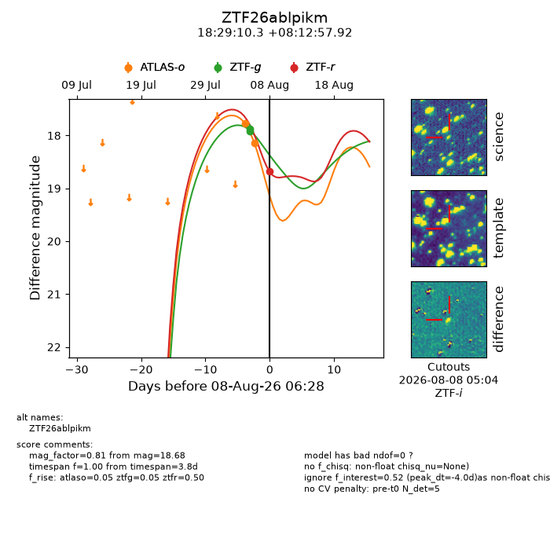
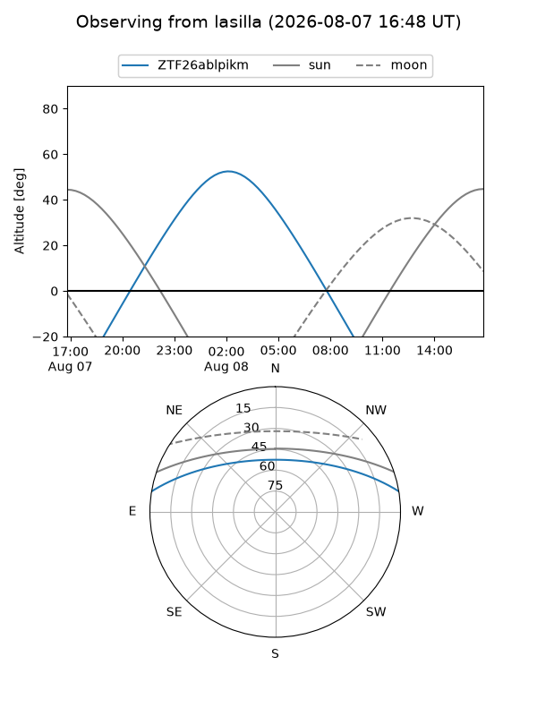
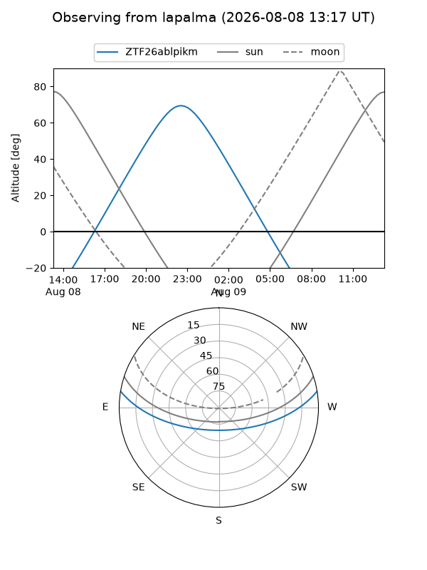
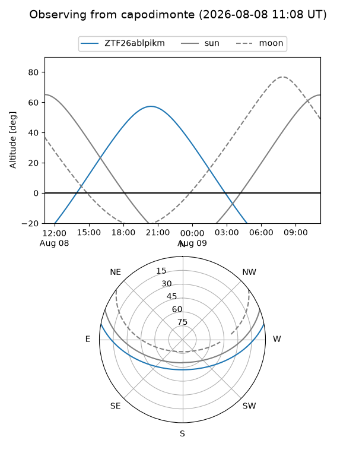
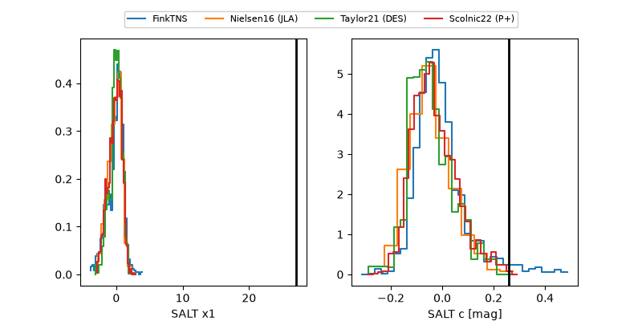

ZTF26ablpikm
Target ZTF26ablpikm at 2026-08-08 06:31
Aliases and brokers:
FINK-ZTF: ztf.fink-portal.org/ZTF26ablpikm
Lasair-ZTF: lasair-ztf.lsst.ac.uk/objects/ZTF26ablpikm
ALeRCE-ZTF: alerce.online/object/ZTF26ablpikm
Direct TNS query: direct search
alt names
ZTF26ablpikm (ztf,fink_ztf)
Coordinates:
equatorial (ra, dec) = 277.2930,+8.21609
equatorial (HMS+DMS) = 18:29:10.33,+08:12:57.92
galactic (l, b) = (37.7718,+8.66203)
Flags:
peak dt: -4.0
Photometry:
last atlaso=18.14, ztfg=17.91, ztfr=18.68
2 atlaso, 2 ztfg, 1 ztfr detections
Lightcurve

Visibility



Additional plots
